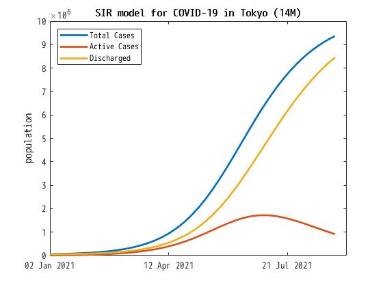

Simulation of SIR model for COVID-19
In the present page we numerically solve
the initial value proble of the SIR model for COVID-19 of the form
\begin{alignat*}{4}
\frac{dS}{dt}
& =
-\beta IS,
& \quad
\frac{dI}{dt}
& =
\beta IS - \gamma I,
& \quad
\frac{dR}{dt}
& =
\gamma I,
\quad
t\in[0,\infty),
\\
S(0)
& =
S_0,
& \quad
I(0)
& =
I_0,
& \quad
R(0)
& =
R_0,
& \quad
\end{alignat*}
where \(S(t)\), \(I(t)\) and \(R(t)\)
are real-value unknown functions of \(t \in \mathbb{R}\),
\(S_0\), \(I_0\) and \(R_0\) are given initial data,
and \(\beta\) and \(\gamma\) are positive constants.
In mathematical epidemiology,
\(t\) is time,
\(S(t)\) is the number of susceptible people,
\(I(t)\) is the number of people infected,
\(R(t)\)s the number of people
who have recovered and developed immunity to the infection,
\(\beta\) the infection rate,
and \(\gamma\) is the recovery rate.
This systems of ordinary differential equations is well-known as
the SIR model for infection disease.
We briefly mention the basic properties of the SIR model.
-
Set \(N:=S+I+R\) which is the total population.
Note that the total poputation \(S+I+R\) is preserved since
\[
\frac{d}{dt}
(S+I+R)
=0.
\]
-
In what follows we assume that \(S_0\), \(I_0\) and \(R_0\) are nonnegative.
Then \(0 \leqq S_0, I_0, R_0 \leqq N\).
Note that \(S\), \(I\) and \(R\) satisfy
\begin{align*}
S(t)
& =
S_0
\exp\left(
-\beta
\int_0^t
I(\tau)
d\tau
\right),
\\
I(t)
& =
I_0
\exp\left(
\int_0^t
\bigl\{
\beta S(\tau)-\gamma
\bigr\}
d\tau
\right),
\\
R(t)
& =
R_0
+
\gamma
\int_0^t
I(\tau)
d\tau.
\end{align*}
Thus \(S(t)\), \(I(t)\) must be nonnegative for all \(t\in[0,\infty)\).
Moreover, it follows that
\(S(t)\) is nonincreasing,
and
\(R(t)\) is nondecreasing and nonnegative.
In particular
\(0 \leqq S(t), I(t), R(t) \leqq N\)
for all \(t\in[0,\infty)\).
This fact works as the a priori estimates of \(S\), \(I\) and \(R\),
and one can easily prove that
the initial value problem in the future direction has
a unique smooth solution globally in time.
-
Similarly we have for any \(t,t_0\in[0,\infty)\)
\begin{align*}
I(t)
& =
I(t_0)
\exp\left(\gamma\int_{t_0}^t \left\{\dfrac{\beta S(\tau)}{\gamma}-1\right\}d\tau\right)
\\
& \leqq
I(t_0)
\exp\left(\gamma\int_{t_0}^t \left\{\dfrac{\beta N}{\gamma}-1\right\}d\tau\right).
\end{align*}
The following function and constant
\[
\rho_e(t):=\dfrac{\beta S(t)}{\gamma},
\quad
\rho_0:=\dfrac{\beta N}{\gamma}
\]
are said to be the effective reproduction number
and the basic reproduction number respectively.
Note that \(\rho_e(t) \leqq \rho_0\),
and that the signature of \(\rho_e(t)-1\) shows the
increase/decrease of the number of active cases \(I(t)\).
For this reason \(\rho_e(t)\)
is the most important function in mathematical epidemiology.
We are concerned with the simulation of SIR model for COVID-19 below.
Set \(T(t)=I(t)+R(t)\) which is the total cases at the time \(t\).
A unit of time here is supposed to be day,
and set the initial date, say, today as \(t=0\).
Visit the government website dealing with the statistics about COVID-19,
and get the total cases \(T(0)\), the daily new cases \(T(0)-T\),
the total number of discharged individuals \(R(0)\)
and the daily new numbers of discharged individuals \(R(0)-R(-1)\).
Set \(S(0):=N-T(0)\) and \(I(0):=T(0)-R(0)\).
See, e.g.,
South Korea,
Hong Kong,
Okinawa
Osaka
Tokyo.
Note that a daily increase of a quantity can be seen
as a differentiation of the quantity on the day.
So we set the infection and recovery rates by
\[
\beta
:=
\frac{T(0)-T(-1)}{(T(0)-R(0))(N-T(0))},
\quad
\gamma
:=
\frac{R(0)-R(-1)}{T(0)-R(0)}.
\]
since
\[
\frac{dT}{dt}
=
\beta(T-R)(N-T),
\quad
\frac{dR}{dt}
=
\gamma(T-R).
\]
Then we have
\[
\rho_e(0)
=
\frac{T(0)-T(-1)}{R(0)-R(-1)}.
\]
By using MATLAB we draw a solution to the initial value problem for the SIR model
with data including
area,
population \(N\),
staring date,
ending date,
\(T(0)\),
\(T(0)-T(-1)\),
\(R(0)\)
and
\(R(0)-R(-1)\).
See
sir1.m
for the detail.
The behavior of solutions to the SIR model depends sensitively on \(\rho_e(0)\),
and the above simulation follows the daily change of \(\rho_e(0)\).
So we take the average of some \(d\) days for \(\beta\) and \(\gamma\)
instead of the values determined only by the data of the initial date.
We replace them by
\[
\beta
:=
\frac{T(0)-T(-d)}{d\bigl(T(0)-R(0)\bigr)(N-T(0))},
\quad
\gamma
:=
\frac{R(0)-R(-d)}{d\bigl(T(0)-R(0)\bigr)}.
\]
for some \(d=1,2,3,\dotsc\).
Then the effective reproduction number of the initial date becomes
\[
\rho_e(0)
=
\frac{T(0)-T(-d)}{R(0)-R(-d)}.
\]
By using Julia Language we draw a solution to the initial value problem
for the SIR model with data including
area,
population \(N\),
staring date \(d0\),
ending date \(d1\),
the date of the begining of taking average \(d2=d0-d\),
\(T(0)\),
\(T(-d)\),
\(R(0)\)
and
\(R(-d)\).
If we fix the area, \(N\), \(d_1\) (or \(d1-d0\)),
\(d2\), \(T(-d)\) and \(R(-d)\),
we can repeat the simulation only by inputting
\(d0\), \(T(0)\) and \(R(0)\).
See
sir2.m
and
sir3.m
for the detail.
